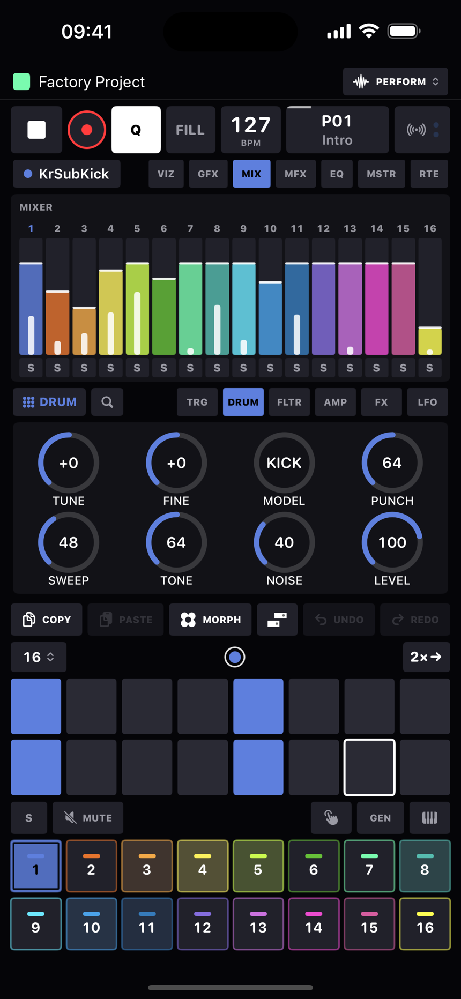
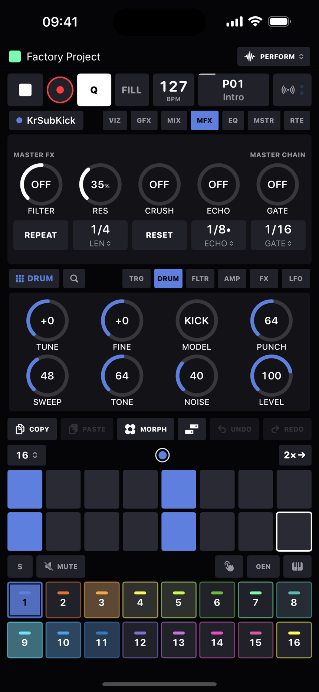
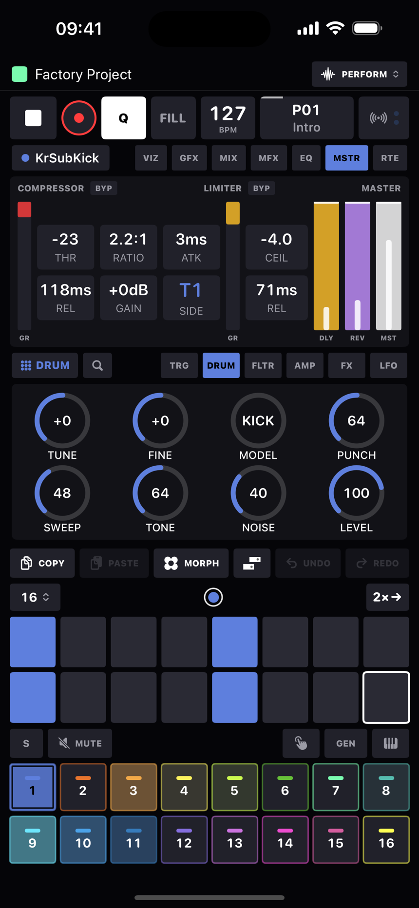

FX & mixer
The top carousel is the mix side of the app: GFX, MIX, MFX, EQ, MSTR and RTE. Swipe between them, or map a pair of hardware buttons to page for you.
The signal path
Each voice runs through its own effects first (the FX knob page). The tracks then sum into the master compressor, which can be sidechained and which any track can be routed around, then the master fader, the EQ, the DJ effects, the limiter and finally a safety saturator. The delay and reverb are send buses with their own returns.
GFX: global sends
Two buses shared by the whole project, fed by each track's DELAY and REVERB send knobs.
| Delay | |
|---|---|
| TIME | Synced to tempo: 1/32, 1/16, 1/8T, 1/16·, 1/8, 1/4T, 1/8· (the default), 1/4, 1/4·, 1/2. |
| FB | Feedback. |
| PING PONG | ON bounces the echoes hard left and right. |
| TONE | Brightness in the feedback path. Low settings make each repeat darker than the last. |
| Reverb | |
|---|---|
| SIZE / DAMP | The size of the plate, from a small room to a wash that barely ends, and how quickly the highs die away. |
| PRE | Pre-delay, 0 to 120 ms. |
| WIDTH | How wide the return is, from mono to fully spread. |
MIX: the mixer
Sixteen faders with live meters, each in its track's colour. On an internal track the fader is the track's VOL parameter, so it can be p-locked, LFO'd and morphed like any other sound value. On a MIDI track it sends CC 7 on the track's channel. Muted tracks dim, and tapping a fader's label selects its track. Pan is on each track's AMP page.



MFX: DJ performance FX
A performance panel on the master bus. It's deliberately temporary: nothing on it saves with the project, so every session starts clean. Every control on it can be MIDI-learned. A knob's settings live in a drawer: tap the knob's name to open it.
| Control | Does |
|---|---|
| FILTER | A DJ-mixer colour filter on one knob: left of centre sweeps a lowpass down, right of centre sweeps a highpass up. Double-tap to snap it back off. Its drawer holds RES, the resonance. |
| CRUSH | One-knob lo-fi: sample rate and bit depth come down together. |
| ECHO | An echo throw whose feedback climbs with the knob toward self-oscillation. Its drawer picks the division: 1/8, 1/8•, 1/4 or 1/2. |
| GATE | A trance gate locked to the beat. Its drawer picks the division, 1/32 to 1/4. |
| REPEAT | A beat repeat on a knob: off at zero, then it loops the last beat of the master, and the loop shortens to a half, a quarter and an eighth as you turn further. A mapped pad still holds it momentarily. |
| FLANGER | A swept flanger, or a phaser from its drawer's MODE switch, with a RATE from SLOW to WILD. The knob is the depth: mix and feedback climb together. |
| SAT | Saturation: a soft clip whose drive climbs with the knob while the loudness stays put, blended in by the same knob. |
| REVERB | A plate reverb on the master, in the classic studio-plate style, with a SIZE in its drawer from SMALL to HUGE: bigger plates ring longer and darker. |
| RESET | The small chip top right. Puts every master FX knob back to its default and lets go of anything momentary. The sync divisions keep their settings. Tape stop is still there through MIDI mappings. |
EQ: master EQ
Three bands over a live response curve: LOW is a shelf at 100 Hz, MID is a bell you can sweep from 200 Hz to 5 kHz with FREQ, and HIGH is a shelf at 8 kHz, each ±12 dB. Double-tap a cell to flatten it, and BYP bypasses the lot without a click.
MSTR: dynamics and levels
- The compressor has THR (−40 to 0 dB), RATIO (1:1 to 20:1), ATK (1 to 100 ms), REL (30 to 600 ms), GAIN (makeup, 0 to +12 dB) and SIDE, which is the sidechain key: Master (itself) or any one track. That's your kick-ducking. A red meter shows how much it's pulling down.
- The limiter has CEIL (0 to −24 dBFS) and REL (5 to 305 ms), with its own amber reduction meter. Both stages have BYP chips that switch without a click.
- The faders are the DLY and REV return levels and the MST master level, each with a live meter.
RTE: compressor routing
A board of 16 track chips plus DLY and REV return chips. Lit means that source goes through the master compressor; dim means it goes around it and rejoins afterwards, dry, at the master fader. Put the drums through and the pads around, or duck everything except the delay tail. The choice is saved per track and survives a device swap.